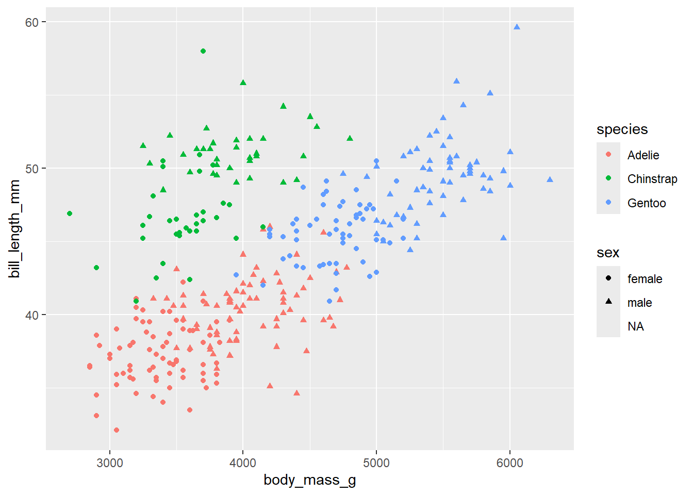
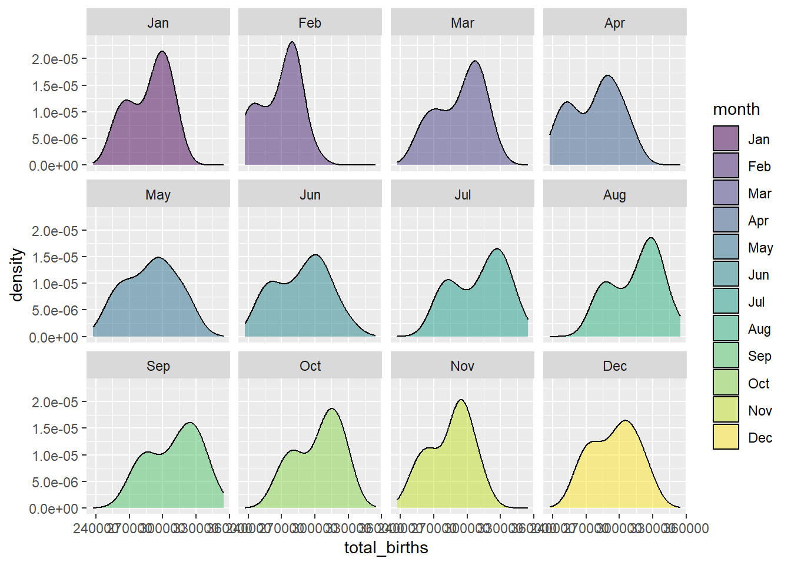

Rows: 344 Columns: 8
── Column specification ────────────────────────────────────────────────────────
Delimiter: ","
chr (3): species, island, sex
dbl (5): bill_length_mm, bill_depth_mm, flipper_length_mm, body_mass_g, year
ℹ Use `spec()` to retrieve the full column specification for this data.
ℹ Specify the column types or set `show_col_types = FALSE` to quiet this message.
# Check it outhead(penguins)
# A tibble: 6 × 8
species island bill_length_mm bill_depth_mm flipper_length_mm body_mass_g
<chr> <chr> <dbl> <dbl> <dbl> <dbl>
1 Adelie Torgersen 39.1 18.7 181 3750
2 Adelie Torgersen 39.5 17.4 186 3800
3 Adelie Torgersen 40.3 18 195 3250
4 Adelie Torgersen NA NA NA NA
5 Adelie Torgersen 36.7 19.3 193 3450
6 Adelie Torgersen 39.3 20.6 190 3650
# ℹ 2 more variables: sex <chr>, year <dbl>
# Explore the relationship between body mass and bill length varies by species and sexggplot(penguins, aes(x = body_mass_g, y = bill_length_mm, color = species, shape = sex))+geom_point()
Warning: Removed 11 rows containing missing values or values outside the scale range
(`geom_point()`).

# Get data on only Adelie penguins that weigh more than 4700gpenguins |>filter(species =="Adelie", body_mass_g >4700) |>head()
# A tibble: 2 × 8
species island bill_length_mm bill_depth_mm flipper_length_mm body_mass_g
<chr> <chr> <dbl> <dbl> <dbl> <dbl>
1 Adelie Biscoe 41 20 203 4725
2 Adelie Biscoe 43.2 19 197 4775
# ℹ 2 more variables: sex <chr>, year <dbl>
# Get data on penguin body mass only# Show just the first 6 rowspenguins |>select(body_mass_g) |>head()
# A tibble: 6 × 1
body_mass_g
<dbl>
1 3750
2 3800
3 3250
4 NA
5 3450
6 3650
# Sort the penguins from smallest to largest body mass# Show just the first 6 rowspenguins |>select(species, body_mass_g) |>arrange(body_mass_g) |>head()
# Calculate the average body mass across all penguins# Note: na.rm = TRUE removes the NAs from the calculationpenguins |>summarize(mean(body_mass_g, na.rm =TRUE))
# Create a new column that records body mass in kilograms, not grams# NOTE: there are 1000 g in 1 kg# Show just the first 6 rowspenguins |>mutate(body_mass_kg = body_mass_g/1000) |>head()
# A tibble: 6 × 9
species island bill_length_mm bill_depth_mm flipper_length_mm body_mass_g
<chr> <chr> <dbl> <dbl> <dbl> <dbl>
1 Adelie Torgersen 39.1 18.7 181 3750
2 Adelie Torgersen 39.5 17.4 186 3800
3 Adelie Torgersen 40.3 18 195 3250
4 Adelie Torgersen NA NA NA NA
5 Adelie Torgersen 36.7 19.3 193 3450
6 Adelie Torgersen 39.3 20.6 190 3650
# ℹ 3 more variables: sex <chr>, year <dbl>, body_mass_kg <dbl>
ggplot(penguins, aes(x = species))+geom_bar()
penguins |>count(species)
# A tibble: 3 × 2
species n
<chr> <int>
1 Adelie 152
2 Chinstrap 68
3 Gentoo 124
Exercise 2
# Sort Gentoo penguins from biggest to smallest with respect to their # bill length in cm (there are 10 mm in a cm)penguins |>filter(species =="Gentoo") |>mutate(bill_length_cm = bill_length_mm /10) |>arrange(desc(bill_length_cm)) |>head()
# Sort the species from smallest to biggest with respect to their # average bill length in cmpenguins |>group_by(species) |>mutate(bill_length_cm = bill_length_mm /10) |>summarize(mean_bill_length =mean(bill_length_cm, na.rm =TRUE)) |>arrange(mean_bill_length)
# A tibble: 3 × 2
species mean_bill_length
<chr> <dbl>
1 Adelie 3.88
2 Gentoo 4.75
3 Chinstrap 4.88
Exercise 3
2 rows (male and female)
3 column (body mass min, max, and range)
each row represents the summary of male and female Chinstrap penguins
penguins |>filter(species =="Chinstrap") |>group_by(sex) |>summarize(min =min(body_mass_g), max =max(body_mass_g)) |>mutate(range = max - min)
# A tibble: 2 × 4
sex min max range
<chr> <dbl> <dbl> <dbl>
1 female 2700 4150 1450
2 male 3250 4800 1550
New Exercises
# Create a dataset with just Adelie and Chinstrap using %in%# Pipe this into `count(species)` to confirm that you only have these 2 speciespenguins |>filter(species %in%c("Adelie", "Chinstrap")) |>count(species)
# A tibble: 2 × 2
species n
<chr> <int>
1 Adelie 152
2 Chinstrap 68
# Create a dataset with just Adelie and Chinstrap using !=# Pipe this into `count(species)` to confirm that you only have these 2 speciespenguins |>filter(species !="Gentoo") |>count(species)
# A tibble: 2 × 2
species n
<chr> <int>
1 Adelie 152
2 Chinstrap 68
# NOTE the use of is.na()penguins |>summarize(sum(is.na(body_mass_g)))
# A tibble: 1 × 1
`sum(is.na(body_mass_g))`
<int>
1 2
# Let’s define a new dataset that removes these penguins:penguins_w_body_mass <- penguins |>filter(!is.na(body_mass_g))nrow(penguins_w_body_mass)
[1] 342
nrow(penguins)
[1] 344
# get rid of any penguin that's missing info on any variablepenguins_complete <- penguins |>na.omit()nrow(penguins)
# Use a shortcut to keep everything but the year and island variablespenguins |>select(-"year", -"island") |>head()
# A tibble: 6 × 6
species bill_length_mm bill_depth_mm flipper_length_mm body_mass_g sex
<chr> <dbl> <dbl> <dbl> <dbl> <chr>
1 Adelie 39.1 18.7 181 3750 male
2 Adelie 39.5 17.4 186 3800 female
3 Adelie 40.3 18 195 3250 female
4 Adelie NA NA NA NA <NA>
5 Adelie 36.7 19.3 193 3450 female
6 Adelie 39.3 20.6 190 3650 male
# Use a shortcut to keep only species and the penguin characteristics measured in mmpenguins |>select("species", contains("mm")) |>head()
# A tibble: 6 × 4
species bill_length_mm bill_depth_mm flipper_length_mm
<chr> <dbl> <dbl> <dbl>
1 Adelie 39.1 18.7 181
2 Adelie 39.5 17.4 186
3 Adelie 40.3 18 195
4 Adelie NA NA NA
5 Adelie 36.7 19.3 193
6 Adelie 39.3 20.6 190
# Use a shortcut to keep only species and bill-related measurementspenguins |>select("species", contains("bill")) |>head()
# A tibble: 6 × 3
species bill_length_mm bill_depth_mm
<chr> <dbl> <dbl>
1 Adelie 39.1 18.7
2 Adelie 39.5 17.4
3 Adelie 40.3 18
4 Adelie NA NA
5 Adelie 36.7 19.3
6 Adelie 39.3 20.6
# Use a shortcut to keep only species and the length-related characteristicspenguins |>select("species", contains("length")) |>head()
# A tibble: 6 × 3
species bill_length_mm flipper_length_mm
<chr> <dbl> <dbl>
1 Adelie 39.1 181
2 Adelie 39.5 186
3 Adelie 40.3 195
4 Adelie NA NA
5 Adelie 36.7 193
6 Adelie 39.3 190
Exercise 3
# Change this code to sort the penguins by species, and then island name# NOTE: The first row should be an Adelie penguin living on Biscoe islandpenguins |>arrange(species) |>arrange(island) |>head()
# Change this code to count the number of male/female penguins observed for each speciespenguins |>filter(!is.na(sex)) |>group_by(sex) |>count(species) |>arrange(species)
# A tibble: 6 × 3
# Groups: sex [2]
sex species n
<chr> <chr> <int>
1 female Adelie 73
2 male Adelie 73
3 female Chinstrap 34
4 male Chinstrap 34
5 female Gentoo 58
6 male Gentoo 61
Exercise 4
# Get today's dateas.Date(today())
[1] "2025-03-06"
# Let's store this as "today" so we can work with it belowtoday <-as.Date(today())# Check out the class of this objectclass(today)
[1] "Date"
# using lubridate packageyear(today)
[1] 2025
# What do these lines produce / what's their difference?# putting label = TRUE puts the name of the month corresponding to the number month(today)
[1] 3
month(today, label =TRUE)
[1] Mar
12 Levels: Jan < Feb < Mar < Apr < May < Jun < Jul < Aug < Sep < ... < Dec
Exercises Part 2: Applications
library(mosaic)
Registered S3 method overwritten by 'mosaic':
method from
fortify.SpatialPolygonsDataFrame ggplot2
The 'mosaic' package masks several functions from core packages in order to add
additional features. The original behavior of these functions should not be affected by this.
Attaching package: 'mosaic'
The following object is masked from 'package:Matrix':
mean
The following objects are masked from 'package:dplyr':
count, do, tally
The following object is masked from 'package:purrr':
cross
The following object is masked from 'package:ggplot2':
stat
The following objects are masked from 'package:stats':
binom.test, cor, cor.test, cov, fivenum, IQR, median, prop.test,
quantile, sd, t.test, var
The following objects are masked from 'package:base':
max, mean, min, prod, range, sample, sum
data("Birthdays")head(Birthdays)
state year month day date wday births
1 AK 1969 1 1 1969-01-01 Wed 14
2 AL 1969 1 1 1969-01-01 Wed 174
3 AR 1969 1 1 1969-01-01 Wed 78
4 AZ 1969 1 1 1969-01-01 Wed 84
5 CA 1969 1 1 1969-01-01 Wed 824
6 CO 1969 1 1 1969-01-01 Wed 100
Exercise 5
# How many days of data do we have for each state?Birthdays |>group_by(state) |>summarize(days =sum(day))
# A tibble: 51 × 2
state days
<chr> <int>
1 AK 114936
2 AL 115119
3 AR 115058
4 AZ 115057
5 CA 115518
6 CO 114905
7 CT 115117
8 DC 115087
9 DE 114967
10 FL 114967
# ℹ 41 more rows
# How many total births were there in this time period?Birthdays |>summarize(total_births =sum(births))
total_births
1 70486538
# How many total births were there per state in this time period, sorted from low to high?Birthdays |>group_by(state) |>summarize(total_births =sum(births)) |>arrange(total_births) |>head()
# A tibble: 6 × 2
state total_births
<chr> <int>
1 VT 147886
2 WY 154019
3 AK 185385
4 DE 188705
5 SD 235734
6 ND 238696
# wrangle and store data, then plotpenguins_minus_Gentoo <- penguins |>filter(species !="Gentoo") ggplot(penguins_minus_Gentoo, aes(x = bill_depth_mm, y = bill_length_mm, color = species)) +geom_point()
Warning: Removed 1 row containing missing values or values outside the scale range
(`geom_point()`).
# wrangle data and pipe into ggplotpenguins |>filter(species !="Gentoo") |>ggplot(aes(y = bill_length_mm, x = bill_depth_mm, color = species)) +geom_point()
Warning: Removed 1 row containing missing values or values outside the scale range
(`geom_point()`).
# Calculate the total number of births in each month and year, eg, Jan 1969, Feb 1969,# Label month by names not numbers, eg, Jan not 1. # Then, plot the births by month and comment on what you learn.Birthdays |>group_by(month, year) |>summarize(total_births =sum(births)) |>mutate(month =month(month, label=TRUE)) |>arrange(year) |>ggplot(aes(x = total_births, fill=month))+geom_density(alpha=0.5)+facet_wrap(~month)
`summarise()` has grouped output by 'month'. You can override using the
`.groups` argument.

more births in August, September
most of the months are bimodal (one small peak, one large peak)
# In 1988, calculate the total number of births per week in each state. # Get rid of week “53”, which isn’t a complete week! # Then, make a line plot of births by week for each state and comment on what you learn. # For example, do you notice any seasonal trends? Are these the same in every state? Any outliers?Birthdays |>group_by(state) |>summarize(total_births =sum(births)) |>head()
# A tibble: 6 × 2
state total_births
<chr> <int>
1 AK 185385
2 AL 1206772
3 AR 684220
4 AZ 947234
5 CA 7822785
6 CO 946378
Source Code
---title: "Dates"format: html---Use this file for practice with the **dates** in-class activity. Refer to the class website for details.## Warm-Ups {.unnumbered}### Example 1 {.unnumbered}```{r}library(tidyverse)penguins <-read_csv('https://raw.githubusercontent.com/rfordatascience/tidytuesday/master/data/2020/2020-07-28/penguins.csv')# Check it outhead(penguins)# Explore the relationship between body mass and bill length varies by species and sexggplot(penguins, aes(x = body_mass_g, y = bill_length_mm, color = species, shape = sex))+geom_point()``````{r}# Get data on only Adelie penguins that weigh more than 4700gpenguins |>filter(species =="Adelie", body_mass_g >4700) |>head()# Get data on penguin body mass only# Show just the first 6 rowspenguins |>select(body_mass_g) |>head()# Sort the penguins from smallest to largest body mass# Show just the first 6 rowspenguins |>select(species, body_mass_g) |>arrange(body_mass_g) |>head()# Calculate the average body mass across all penguins# Note: na.rm = TRUE removes the NAs from the calculationpenguins |>summarize(mean(body_mass_g, na.rm =TRUE))# Calculate the average body mass by speciespenguins |>group_by(species) |>summarize(mean(body_mass_g, na.rm =TRUE))# Create a new column that records body mass in kilograms, not grams# NOTE: there are 1000 g in 1 kg# Show just the first 6 rowspenguins |>mutate(body_mass_kg = body_mass_g/1000) |>head()``````{r}ggplot(penguins, aes(x = species))+geom_bar()penguins |>count(species) ```### Exercise 2 {.unnumbered}```{r}# Sort Gentoo penguins from biggest to smallest with respect to their # bill length in cm (there are 10 mm in a cm)penguins |>filter(species =="Gentoo") |>mutate(bill_length_cm = bill_length_mm /10) |>arrange(desc(bill_length_cm)) |>head()# Sort the species from smallest to biggest with respect to their # average bill length in cmpenguins |>group_by(species) |>mutate(bill_length_cm = bill_length_mm /10) |>summarize(mean_bill_length =mean(bill_length_cm, na.rm =TRUE)) |>arrange(mean_bill_length)```### Exercise 3 {.unnumbered}* 2 rows (male and female)* 3 column (body mass min, max, and range)* each row represents the summary of male and female Chinstrap penguins```{r}penguins |>filter(species =="Chinstrap") |>group_by(sex) |>summarize(min =min(body_mass_g), max =max(body_mass_g)) |>mutate(range = max - min)```## New Exercises {.unnumbered}```{r}# Create a dataset with just Adelie and Chinstrap using %in%# Pipe this into `count(species)` to confirm that you only have these 2 speciespenguins |>filter(species %in%c("Adelie", "Chinstrap")) |>count(species)# Create a dataset with just Adelie and Chinstrap using !=# Pipe this into `count(species)` to confirm that you only have these 2 speciespenguins |>filter(species !="Gentoo") |>count(species)``````{r}# NOTE the use of is.na()penguins |>summarize(sum(is.na(body_mass_g)))# Let’s define a new dataset that removes these penguins:penguins_w_body_mass <- penguins |>filter(!is.na(body_mass_g))nrow(penguins_w_body_mass)nrow(penguins)# get rid of any penguin that's missing info on any variablepenguins_complete <- penguins |>na.omit()nrow(penguins)nrow(penguins_complete)```### Exercise 2 {.unnumbered}```{r}# First: recall the variable namesnames(penguins)# Use a shortcut to keep everything but the year and island variablespenguins |>select(-"year", -"island") |>head()# Use a shortcut to keep only species and the penguin characteristics measured in mmpenguins |>select("species", contains("mm")) |>head()# Use a shortcut to keep only species and bill-related measurementspenguins |>select("species", contains("bill")) |>head()# Use a shortcut to keep only species and the length-related characteristicspenguins |>select("species", contains("length")) |>head()```### Exercise 3 {.unnumbered}```{r}# Change this code to sort the penguins by species, and then island name# NOTE: The first row should be an Adelie penguin living on Biscoe islandpenguins |>arrange(species) |>arrange(island) |>head()# Change this code to count the number of male/female penguins observed for each speciespenguins |>filter(!is.na(sex)) |>group_by(sex) |>count(species) |>arrange(species)```### Exercise 4 {.unnumbered}```{r}# Get today's dateas.Date(today())# Let's store this as "today" so we can work with it belowtoday <-as.Date(today())# Check out the class of this objectclass(today)# using lubridate packageyear(today)# What do these lines produce / what's their difference?# putting label = TRUE puts the name of the month corresponding to the number month(today)month(today, label =TRUE)```## Exercises Part 2: Applications {.unnumbered}```{r}library(mosaic)data("Birthdays")head(Birthdays)```### Exercise 5 {.unnumbered}```{r}# How many days of data do we have for each state?Birthdays |>group_by(state) |>summarize(days =sum(day)) # How many total births were there in this time period?Birthdays |>summarize(total_births =sum(births))# How many total births were there per state in this time period, sorted from low to high?Birthdays |>group_by(state) |>summarize(total_births =sum(births)) |>arrange(total_births) |>head()```### Exercise 6 {.unnumbered}```{r}# create datasetdaily_births <- Birthdays |>group_by(date) |>summarize(total_births =sum(births)) |>mutate(day =wday(date, label=TRUE))head(daily_births)# plotggplot(daily_births, aes(x=date, y=total_births, color=day))+geom_point()```### Exercise 7```{r}# wrangle and store data, then plotpenguins_minus_Gentoo <- penguins |>filter(species !="Gentoo") ggplot(penguins_minus_Gentoo, aes(x = bill_depth_mm, y = bill_length_mm, color = species)) +geom_point()# wrangle data and pipe into ggplotpenguins |>filter(species !="Gentoo") |>ggplot(aes(y = bill_length_mm, x = bill_depth_mm, color = species)) +geom_point()``````{r}# Calculate the total number of births in each month and year, eg, Jan 1969, Feb 1969,# Label month by names not numbers, eg, Jan not 1. # Then, plot the births by month and comment on what you learn.Birthdays |>group_by(month, year) |>summarize(total_births =sum(births)) |>mutate(month =month(month, label=TRUE)) |>arrange(year) |>ggplot(aes(x = total_births, fill=month))+geom_density(alpha=0.5)+facet_wrap(~month)```* more births in August, September* most of the months are bimodal (one small peak, one large peak)```{r}# In 1988, calculate the total number of births per week in each state. # Get rid of week “53”, which isn’t a complete week! # Then, make a line plot of births by week for each state and comment on what you learn. # For example, do you notice any seasonal trends? Are these the same in every state? Any outliers?Birthdays |>group_by(state) |>summarize(total_births =sum(births)) |>head()```